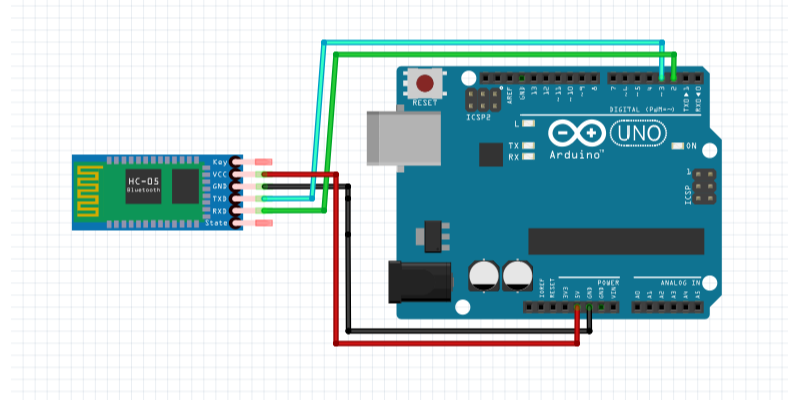

I Le Projet :
nous avons construit une petite voiture télécommandée par Bluetooth avec suivi de ligne grâce à un capteur de ligne infrarouge et évitement d'obstacles grâce à un télémêtre à ultrason. Elle peut être contrôlée à distance à partir d'un smartphone via une application.
pour se faire nous disposons de :
-
HC-05
Le HC-05 est un module Bluetooth qui peut être utilisé pour établir une communication sans fil entre une arduino et un téléphone. Le HC-05 dispose d'une portée de communication allant jusqu'à 10 mètres et est très facile à utiliser avec une interface série simple.

-
HC-SR04
Le HC-SR04 est un module de capteur à ultrasons qui peut être utilisé pour mesurer la distance avec un objet. Il utilise des signaux ultrasoniques pour détecter la distance avec une précision et une plage de mesure élevée.

-
L298n
Le L298N est un double pont en H qui peut être utilisé pour contrôler la vitesse et la direction des moteurs à courant continu.

-
QTR-3RC
Le QTR-3RC est un capteur de ligne infrarouge qui peut être utilisé pour détecter la présence d'une ligne. Il est composé de trois capteurs infrarouges et dispose d'une interface analogique pour une lecture précise de la position de la ligne.
-
Arduino UNO Rev3
L'Arduino Uno Rev3 est une carte électronique équipée d'un microcontrôleur. Elle dispose de broches d'entrée/sortie pour communiquer avec différents composants électroniques.
II Les Capteur:
-
capteur à infrarouge
Entrée/Sortie du capteur
- GND : à brancher à la terre. sert à l'alimentation du capteur.
- VCC : à brancher au 5V de l'arduino. sert à l'alimentation du capteur.
- sortie 1 : à brancher au A0 de l'arduino. sortie analogique representant le niveaux d'absorption des infrarouges 0 pour une réflexion totale et 1023 pour une absorption totale.
- sortie 2 : à brancher au A1 de l'arduino. sortie analogique representant le niveau d'absorption des infrarouges 0 pour une réflexion totale et 1023 pour une absorption totale.
- sortie 3 : à brancher au A2 de l'arduino. sortie analogique représentant le niveau d'absorption des infrarouges 0 pour une réflexion totale et 1023 pour une absorption totale.
Experiences Réalisées
-
Nous avons tout d'abord mesuré le capteur afin de s'assurer de ses dimensions :

nos resultats concordent bien avec la documentation fournie.
Nous avons mesuré la distance optimale du capteur avec le sol :
on obtient ce tableau :
10 9 8 7 6 5 4 3 982 900 910 920 927 900 870 810 Grâce à ce tableau, nous pouvons en déduire que la distance optimale entre le capteur et le sol est 6mm.
Code utilisé pour les tests
int const capteurIR= A0; // permet de donner un nom à une entrée, // ce n’est pas obligatoire mais conseillé int ValeurIR=0 ; // crée la variable du capteur void setup() { Serial.begin(9600); // définit la vitesse de la liaison série } void loop() { Serial.print("Valeur du capteur: "); // envoi du texte sur la liaison série ValeurIR = analogRead(capteurIR); //lire l’entrée analogique qui correspond au capteur Serial.println(ValeurIR); // envoi la valeur du capteur sur la liaison série delay(100);// attente de 100ms entre chaque valeur }Conclusion des test:
le capteur a les dimensions indiquées sur le doc 32 mm × 8 mm × 3 mm, il devra être installé à 6 mm du sol pour un fonctionnement optimal.
Influence:
capteur à ultrasons
Entrée/Sortie du capteur
- GND : à brancher à la terre. sert à l'alimentation du capteur.
- VCC : à brancher au 5V de l'arduino. sert à l'alimentation du capteur.
- Trig : à brancher au 5 de l'arduino. entrée digitale, émission de salve ultra-sonor par le capteur lorsque l'état du pin est haut (5V)
- Echo : à brancher au 4 de l'arduino. sortie digitale, émet un signal électrique quand une salve est reçue.
Experiences Réalisées
-
nous avons mesuré la distance minimale et maximale de captation :

La règle nous permet de trouver la distance minimale de capture : 2 cm.
Le mètre nous permet de trouver la distance maximale de capture : 400 cm.
nous avons mesuré la distance minimale et maximale de captation :

L’angle de détection horizontal est d’environ 40 degrés.
L’angle de détection vertical est d'environ égal à 60 degrés.
Code utilisé pour les tests
int const trigPin=5; //Trig int const echoPin=4; //Echo long duree, distance; // variables pour les calculs void setup() { Serial.begin (9600); pinMode(trigPin, OUTPUT); //On défini Trig comme une sortie pinMode(echoPin, INPUT); //On défini Echo comme une entrée } void loop() { digitalWrite(trigPin, LOW); // On met la sortie trigPin à 0 delayMicroseconds(2); // attente 2ms digitalWrite(trigPin, HIGH); // On met la sortie trigPin à 1 delayMicroseconds(10); //Trig envois pendant 10ms digitalWrite(trigPin, LOW); // On met la sortie trigPin à 0 // On calcul le temps pour l'aller retour du signal duree = pulseIn(echoPin, HIGH); distance = duree*340/(2*10000); //Pour le moniteur série Serial.print(distance); Serial.println(" cm "); Serial.print(duree); Serial.println(" ms"); delay(100); }Conclusion des test:
le capteur à les dimension indiqué sur le doc 45 mm × 20 mm × 15 mm, il devra être installé à la verticale pour un fonctionement optimal.
il peut capter des obstacle situé entre 2 cm et 4 m sur une plage de 40° horizontal et 60° vertical.
Influence:

III La carte de puissance
nous utilisons une carte de puissance pour ...
IV La Radio-commande
Le Bleutooth
Le Bluetooth est une technologie de communication sans fil qui utilise des ondes radio pour transmettre des données et des informations entre les appareils. le Bluetooth peut être utilisé pour contrôler et piloter des appareils à distance, tels que des drones ou des voitures télécommandées.
Le module HC-05
Le module HC-05 est un module Bluetooth qui permet de communiquer avec un autre appareil Bluetooth. Il est possible de le connecter à un Arduino pour contrôler un robot ou un drone à distance.
cablage
code des tests
#include <SoftwareSerial.h> SoftwareSerial BTserial(2, 3); // RX | TX bool IRActive = false; void setup() { Serial.begin(9600); BTserial.begin(38400); randomSeed(analogRead(0)); } void loop() { delay(random(100)); // simulation du temp prix par un autre programe ex: lecture de capteur. ecouter(); } void ecouter(){ bool premierNombreEstNegatif = false; bool secondNombreEstNegatif = false; String representationPremierNombre = ""; String representationSecondNombre = ""; unsigned long currentMillis = millis(); char bt = ' '; while (BTserial.available() <= 14) { // on attend d'etre sur d'avoir au moins un message complet. if((millis() - currentMillis) > 500){ // si on attend plus de 0.5s return; // alors on s'arrete } } while (BTserial.available() > 0) { // tant qu'on a des donné a analiser char c = BTserial.read(); // on les recupere if (c == ';') { // on cherche une fin de transmition bt = BTserial.read(); // ---------------------------------------------------------------------------------------------------------------------------------- representationPremierNombre += (char)BTserial.read();// on lit le message selon la forme X X X X X X ; representationPremierNombre += (char)BTserial.read();// ^ ^ ^ ^ ^ secondNombreEstNegatif = BTserial.read() == '1'; // | | | | | representationSecondNombre += (char)BTserial.read();// (1)(2)(3)(4)(5) representationSecondNombre += (char)BTserial.read();// (1) signe du nb 1 ; (2) valeur absolue de nb 1 ; (3) signe du nb 2 ; (4) valeur absolue de nb 2 ; (5) pour delimité les paket :) // ---------------------------------------------------------------------------------------------------------------------------------- if(bt == '2'){ IRActive = !IRActive; Serial.println(IRActive ? "IR activé" : "IR desactivé"); // juste pour les log return; } premierNombreEstNegatif = bt == '1'; int premierNombre = (int) strtol( &representationPremierNombre[0], NULL, 16); //convertion de representation de nombre hexadecimal en nombre int secondNombre = (int) strtol( &representationSecondNombre[0], NULL, 16); //idem Serial.println("A: " + String(premierNombreEstNegatif ? premierNombre*-1 : premierNombre) + " B: " + String(secondNombreEstNegatif ? secondNombre*-1 : secondNombre)); // juste pour les log return; } } }L'Application
nous avons réalisé l'app sur Android Studion un environnement de développement intégré (IDE) officiel pour la création d'applications mobiles Android, créé par Google. Il fournit un ensemble d'outils puissants pour les développeurs d'applications Android, tels que des éditeurs de code, des outils de débogage, des émulateurs, des profilers, des outils de test et bien plus encore.
fonctionnalité
- connexion au robot
- contrôle du robot
- arrêt/lancement du mode IR
code
pour des raison de lisibilité on ne parlera pas de tout le code de l'app ici.
//l'extrait qui suit est le code de l'application android qui permet de piloter le robot avec le joystick final JoystickView joystickRight = findViewById(R.id.joystickView_right); joystickRight.setOnMoveListener((angle, strength) -> { mTextViewAngleRight.setText(angle + "°"); mTextViewStrengthRight.setText(strength + "%"); int VitesseA = angleToSpeed(angle)*strength/100; int VitesseB = angleToSpeed(angle-90)*strength/100; mTextViewSpeedA.setText("A: "+ VitesseA); mTextViewSpeedB.setText("B: "+ VitesseB); if ( bluetoothClient == null ) return; String msg =""; if(VitesseA >= 0){ msg = msg+'0'; msg = msg + String.format("%02X", VitesseA); }else{ msg = msg+'1'; msg = msg + String.format("%02X", VitesseA*-1); } if(VitesseB >= 0){ msg = msg+'0'; msg = msg + String.format("%02X", VitesseB); }else{ msg = msg+'1'; msg = msg + String.format("%02X", VitesseB*-1); } msg = msg+';'; bluetoothClient.writeString( msg); }); private int angleToSpeed(int angle){ if(angle < 0){ angle+=360; } if(angle<90){ return 255; }else if(angle < 180){ return (angle - 90) * -510 / 90 + 255; //(x - in_min) * (out_max - out_min) / (in_max - in_min) + out_min avec x = angle, in_min = 90 , in_max = 180 , out_min = 255 et out_max = -255 => fonction map de arduino.h }else if(angle < 270){ return -255; }else{ return (angle - 270) * 510 / 90 - 255; //(x - in_min) * (out_max - out_min) / (in_max - in_min) + out_min avec x = angle, in_min = 270 , in_max = 360 , out_min = -255 et out_max = 255 => fonction map de arduino.h } }//l'extrait qui suit est le code de l'application android qui permet d'activer ou désactiver le mode de suivie de ligne Button button = (Button) findViewById(R.id.button); button.setOnClickListener(v -> { if ( bluetoothClient == null ) return; bluetoothClient.writeString( "200000;200000;200000;");// on envoie trois fois la même commande pour être sur que le robot la recoive });Protocole
ce protocole est constitué de packet conposé de 7 octets, le premier octet indique si un bouton est appuyé ou la direction du moteur A, si le premier octet représente la direction du moteur A alors le deuxième et troisième octet représentent la vitesse du moteur A au format hexadécimal tandis que le quatrième indique la direction du moteur B et les cinq et sixième octet représentent la vitesse du moteur B au format hexadécimal. le septième octet est un octet de fin de packet.
V La voiture
VI Conclusion